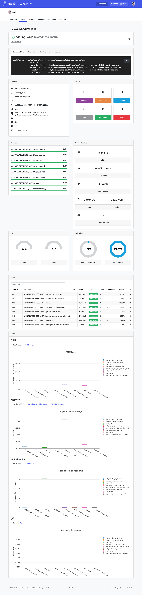

4 Advanced features
If you are reading the advanced section of this workshop I am assuming that you are already familiar with what are workflows, processes, and operators. I am also assuming that you know how a Nextflow workflow is structured and you understand the syntax and logic used in writing and configuring Nextflow pipelines. For this reason, you will find the following section to be a bit different from the ones that came before. I will not walk you through complete reproducible examples as I did until now, but I will present small snippets of code that show some specific functionality or practice that I deemed to be useful to know. You are supposed to try out by yourself these ideas, and see how they can be applied to your own use case.
4.1 Process inputs
The input(s) used by a process is defined in its input: block, as we saw before.
The input(s) specified can be of several types.
We already saw in the basic section of this workshop the path and val input qualifiers.
We will see them more in detail now, as well as explore some additional input qualifiers.
4.1.1 Input of type val
An input of type val just defines a value, that is made available to the process as a variable.
As an example, the following code writes the value “Good morning” to the file called my_file.txt.
process say_hello {
input:
val greeting_sentence
output:
path "my_file.txt"
script:
"""
echo $greeting_sentence > my_file.txt
"""
}
workflow {
Channel.value("Good morning").set{ my_ch }
say_hello( my_ch )
}4.1.2 Input of type path
An input of type path stages a file in the working directory of the process, and makes the filename available to the process under the variable declared.
As an example, the following code just reads the file /path/to/a/file.txt to the standard output.
process read_file {
input:
path my_file
script:
"""
cat $my_file
"""
}
workflow {
Channel.fromPath("/path/to/a/file.txt").set{ my_ch }
read_file( my_ch )
}4.1.3 Input of type tuple
An input of type tuple can be used when the channel given in input to the process emits lists of elements instead of single elements.
The elements contained in the list can be of any type, like for example val or path.
As an example, the following code appends the value “Good morning” to the file /path/to/a/file.txt.
process append_value_to_file {
input:
tuple(
path(my_file),
val(my_value)
)
script:
"""
echo $my_value >> $my_file
"""
}
workflow {
Channel.of( [ "Good morning", "/path/to/a/file.txt" ] ).set{ my_ch }
append_value_to_file( my_ch )
}4.2 Process outputs
Process outputs can have similar types to the ones used for process inputs.
So for example the output of a process can be a path variable (a file), a val variable (a groovy variable), or a tuple of such elements.
Other output types exist in Nextflow, but we will not treat them here.
Read here for more details.
See the following example:
process append_value_to_file {
input:
tuple(
path(my_file),
val(my_value)
)
output:
tuple(
path(my_file),
val(my_value)
)
script:
"""
echo $my_value >> $my_file
"""
}
workflow {
Channel.of( [ "Good morning", "/path/to/a/file.txt" ] ).set{ my_ch }
append_value_to_file( my_ch )
}In this example, we see the same process as before, but this time we declared an output block.
The output is of type tuple, with two elements contained in it (one of type path and the other of type val).
After execution of the process append_value_to_file, the channel append_value_to_file.out will contain a list of two elements.
The first element will be the filename given in input, and the second element will be the value given in input.
Note that the file produced in output by the process will not be the same file given in input to it: it will have been modified in the script block by appending my_value to it.
4.3 The Groovy programming language
Here we will talk about some features of the Groovy programming language, on which Nextflow is based, that can be useful when writing workflows. If you want to test out some Groovy code interactively, head off to this website and paste the code snippets that we will introduce.
4.3.1 Closures
We already introduced closures in previous sections, where we used them in conjunction with the map operator. In general, we can consider a closure as an unnamed function, defined as a statement enclosed in curly brackets. The following is a closure
{ it[1] }We can manually define the inputs and outputs of a closure. For example:
{
x, y ->
z = x + y
return z
}In the above-defined example the closure expects two inputs, (x,y ->), some operation is performed on them (z = x + y), and a value is explicitly returned (return z).
The definition of inputs is optional, and indeed it is usually skipped.
If an input is not defined, the implicit variable it is used to refer to any input passed to the closure.
So we could write the following, assuming that a tuple of two elements is passed as an input to the closure
{
z = it[0] + it[1]
return z
}What’s more, it is possible to also omit the return statement from a closure.
In this case, the last evaluated expression is returned.
{ it[0] + it[1] }As shown in the previous example, closures can be split into multiple lines or they can be written on a single line. They can contain any valid Groovy code statement. For example:
{ if ( it < 1 ) {"small"} else { "big" } }4.3.2 Conditional statements
Conditional statements in Groovy can be written in several ways. The simplest approach is that of a classic if/else statement. This can be written, for example, as follows.
if ( x < 1 ) {
y = "small"
} else {
y = "big"
}A more compact syntax to achieve the same result takes advantage of the ternary operator
y = ( x < 1 ) ? "small" : "big"In case when the return value desired for the TRUE case is the statement itself, the Elvis operator can be used
y = my_list ?: "list is empty"In the latter case, the variable y will contain the content of the listmy_list if this is not empty, and it will contain the string list is empty otherwise.
4.4 Channel factories
Besides the Channel.fromPath and Channel.value channel factories that we saw before, another useful Channel factory (especially for debugging purposes) is Channel.of.
Channel.of allows you to put into a channel any Groovy data structure like lists, hash maps, and so on.
So takes as an example the following:
Channel.of(
["name": "EBI", "type": "institute", "location": "UK"],
["name": "GB", "type": "institute", "location": "Germany"],
)This will create a channel emitting two elements, each of them a Groovy map containing three elements.
What especially differentiates Channel.of from Channel.value is that the latter can contain only a single element.
4.5 Operators
In the basic section of this workshop, we introduced a few Nextflow operators: map, splitCsv, view.
Here we will more formally describe such operators and also look at additional operators that can be helpful for workflows with more complex logic. Note that this is not an exhaustive list.
An exhaustive list can be found here.
4.5.1 The view operator
The view operator just prints to the terminal the content of the channel, one element per line.
Channel.of(1,2,3).view()Expected output:
1
2
34.5.2 The map operator
The map operator can be used to modify the content of a channel on the fly.
For example, it can be used to extract just some elements from a channel emitting lists.
Channel.of(
["name": "EBI", "type": "institute", "location": "UK"],
["name": "GB", "type": "institute", "location": "Germany"],
)
.map{ it["name"] }Expected output:
EBI
GB4.5.3 The set operator
The set operator assigns a name to a channel.
The name must be given as a closure argument.
Channel.of(1, 2, 3).set{ my_ch }The above snippet creates a channel called my_ch with the values specified.
4.5.4 The splitCsv operator
The splitCsv operator is usually used to process a sample sheet.
It takes a path channel containing a CSV file and emits each line of the CSV as a list of values (or as a hash map if header: true is specified).
4.5.5 The flatten operator
The flatten operator will take all the elements in a channel and split them into single elements.
If the channel emits lists or nested lists, they are flattened and each element is emitted independently.
Channel.of(
[1, 2, 3],
["aa", "bb", "cc"]
)
.flatten()Expected output:
1
2
3
aa
bb
cc4.5.6 The collect operator
The collect operator is in a way performing the opposite operation of the flatten operator.
It takes all the elements in a channel and collects them in a single list, which is then emitted all at once.
Channel.of(
[1, 2, 3],
["aa", "bb", "cc"]
)
.collect()Expected output:
[1, 2, 3, aa, bb, cc]4.5.7 The filter operator
The filter operator filters the elements of a channel, emitting only the ones for which a condition is satisfied.
The condition is provided as a closure, with a boolean return value.
It is also possible to use a regular expression as a test, but we will not treat it here.
Channel.of(1, 2, 3, 4, 5)
.filter{ it > 3 }Expected output:
4
54.5.8 The first operator
The first operator just emits the first element of a channel.
Useful for testing the logic without running the full workflow.
Channel.of(1, 2, 3, 4, 5).first()Expected output:
14.5.9 The combine operator
The combine operator creates the Cartesian product of two channels (all the possible combinations of elements).
Channel.of(1,2,3).set{ ch_1 }
Channel.of("a", "b", "c").set{ ch_2 }
ch_1.combine(ch_2)Expected output:
[1, a]
[2, a]
[1, b]
[2, b]
[3, a]
[3, b]
[1, c]
[2, c]
[3, c]The combine operator can also be used to join elements that present a matching key from two channels.
This is achieved by specifying the by argument, with an integer specifying the position in the tuple to use as a matching key.
Channel.of(
["key1", 1],
["key2", 2],
["key3", 3],
).set{ ch_1 }
Channel.of(
["key3", "aa"],
["key1", "bb"],
["key2", "cc"],
).set{ ch_2 }
ch_1.combine(ch_2, by: 0)Expected output:
[key1, 1, bb]
[key3, 3, aa]
[key2, 2, cc]4.5.10 The groupTuple operator
The groupTuple operator collects the elements of a channel according to a matching key (whose position is specified with the by argument).
Channel.of(
["key1", 1],
["key2", 2],
["key1", 3],
["key2", 4],
["key1", 4],
)
.groupTuple(by: 0)Expected output:
[key1, [1, 3, 4]]
[key2, [2, 4]]4.6 Implicit variables
Implicit variables in Nextflow are a set of variables that are automatically defined by Nextflow for a process, globally, or in nextflow.config.
They can be accessed to modify the execution of processes and workflows according to their value.
Here just a few implicit variables are presented. For a full description visit here.
4.6.1 Script implicit variables (available in main.nf)
projectDir: the directory where themain.nfscript is locatedlaunchDir: the directory where Nextflow is executed fromparams: a dictionary containing parameters given via the command line or vianextflow.config(likeparams.inputthat we used in the basic section of this workshop)workDir: the working directory where the processes are executed
4.6.2 Configuration implicit variables (available in nextflow.config)
launchDir: the directory where Nextflow is executed fromprojectDir: the directory where themain.nfscript is located
4.6.3 Process implicit variables (defined within a process)
All of the process implicit variables are part of the task dictionary.
task.attempt: the number of times the task has been retried because of errors (when usingerrorStrategy "retry")task.hash: the hash values of the task (this is used to define the task’s working directory)task.processes: the name of the processtask.name: the name of the task (composed of process name and inputs)task.exitStatus: the exit code of the task
4.7 Directives
Directives are options that can be applied to processes, affecting their execution in several ways.
We already saw the conda, container, cpu, time, and memory directives in the basic section of this workshop.
Here we will explore them more in detail, together with some additional directives that we did not encounter before.
This list is not exhaustive. For a complete description of Nextflow directives see here.
4.7.1 The conda directive
The conda directive is used to define a conda environment where the script block is run.
Even when using the faster mamba solver instead than conda, still the conda directive is used to specify the dependencies.
process {
conda "python pandas"
script:
"""
"""
}4.7.2 The container directive
The container directive defines the container used to run the script block.
This can be a Docker container, a Singularity container, or other kinds of containers (see here for more).
The container runtime to be used is usually defined in the nextflow.config file.
The container can be local or hosted in a container registry like DockerHub.
process {
container "docker://saulpierottiebi/nvtop"
script:
"""
"""
}4.7.3 The cpus, memory, and time directives
The cpus, memory, and time directives are used to define the resources required by a process.
These are used for example when scheduling jobs with a batch scheduler in a cluster environment.
They are able to understand both strings (like "1 GB", or "2 days") and also values in the form 1.GB or 1.day.
The latter expression can also be used in closures to dynamically compute resource requirements (for example, memory { 2.GB * task.attempt }, we will see this better when talking of the errorStrategy directive).
process {
cpus 4
memory "1 GB"
time "2 days"
script:
"""
"""
}4.7.4 The label directive
The label directive is used to apply a common set of configurations to a set of processes.
This allows all the configurations to be defined centrally in nextflow.config, instead of being hard-coded in each process definition.
process do_something {
label "process_long"
script:
"""
"""
}
process do_something_else {
label "process_long"
script:
"""
"""
}Any process directive can be included in the withLabel code block in nextflow.config.
And in nextflow.config:
withLabel:process_long {
time = "3 days"
}4.7.5 The debug directive
The debug directive can be set to the boolean values true or false.
If set to true, the standard output of the process is shown on the command line during workflow execution.
As the name suggests, this is useful for debugging particular processes.
process do_something {
debug true
script:
"""
echo "This will be seen in the console"
"""
}4.7.6 The cache directive
The cache directive controls the behaviour of the Nextflow resume system.
If cache is set to false, the process is not cached and it is executed de novo each time, even if resume is set to true globally.
process do_something {
cache false
script:
"""
"""
}4.7.7 The errorStrategy directive
The errorStrategy directive controls what happens when the exit code of a process is not 0 (when the process terminates with an error).
Possible values are “terminate”, “retry”, “finish”, and “ignore”.
process do_something {
errorStrategy "ignore"
script:
"""
"""
}It is also possible to use a closure as an argument for the errorStrategy directive.
This allows us to obtain a different exit behaviour with different exit codes.
Combining the “retry” errorStrategy with dynamic resource allocation we can obtain a process that when fails with certain exit codes (for example corresponding to insufficient memory) is retried with more resources.
process do_something {
errorStrategy { task.exitStatus == 130 ? "retry" : "terminate" }
memory { 10.GB * task.attempt }
script:
"""
"""
}Note that the exit codes are platform-dependent so are best defined on a platform-dependent basis instead of being hard-coded.
4.7.8 The publishDir directive
The publishDir directive defines where to copy the outputs of a process following successful execution.
This is typically used with the final outputs of a workflow that are of interest for further analysis.
Using the publishDir directory, we can obtain all our outputs in an organised directory structure.
process do_something {
publishDir "/my/output/dir"
output:
path "my_file.txt"
script:
"""
touch my_file.txt
"""
}4.7.9 The executor and queue directives
The executor directive allows specifying the executor that should be used for the execution of each process.
This can be “local” (the default) for local execution, “lsf” for using the batch scheduler IBM Spectrum LSF, or other values for several other batch schedulers.
It is even possible to use cloud infrastructures such as AWS, Microsoft Azure, or Google Cloud.
Using executors other than the “local” executor is essential for real-world workflows, where the computational resources required often vastly exceed those of a single laptop or even server.
You can read more about different executors for Nextflow here.
The queue directive allows you to define which of the batch scheduler queues to submit the process’ tasks to.
The value assigned to the queue directive should be a string matching the name of an existing queue.
process do_something {
executor "lsf"
queue "research"
script:
"""
"""
}4.7.10 The ext directive
The ext directive is used for advanced, custom configurations.
It allows you to define any key-value pair for the process.
The argument of the ext directive should be a closure assigning a variable.
The custom variables are made available like any other task implicit variable in the dictionary task.ext.
process do_something {
ext { my_var = "my_value" }
script:
"""
echo $task.ext.my_var
"""
}4.8 Advanced workflow configuration
We have already explored one of the main locations where Nextflow configurations can be set: the nextflow.config file.
Nextflow actually provides several systems for configuring a workflow, each suited to a specific use case.
We will explore them in this section, together with configuration profiles.
4.8.1 Configuration files and command line parameters
Configuration files can be found in canonical locations, that Nextflow checks automatically. Alternatively, it is possible to manually load a configuration file in a custom location when running a workflow, or pass configuration parameters on the command line itself.
A rigid hierarchy of configurations is enforced so that in case of conflicting configurations it is predictable which one will be actually used. The following configuration modes go from highest to lowest priority:
- Command line parameters (
--some_param) - Parameters provided in a file via the
-params-fileoption - Manually sourced configuration files via the
-coption - The
nextflow.configfile in the current directory - The
nextflow.configfile in the project directory - The
$HOME/.nextflow/configfile - Values defined in the pipeline script itself (i.e.
main.nf)
4.8.1.1 Command line parameters
Any parameter passed on the command line with a double dash (--some_param) is loaded in the params scope in Nextflow (so --some_param 4 will assigning a value of 4 to the variable params.some_param).
If a value is specified after the command line flag (for example --some_param 4), the value is assigned to the parameter.
If no value is specified (for example --some_param), the variable will store the boolean value true.
Since command line parameters have the highest priority in the configuration hierarchy, they are often used to override default parameter values set in nextflow.config.
It is important to differentiate workflow command line parameters that are prepended by a double dash --some_param from Nextflow runtime parameters which are prepended by a single dash (-resume).
Nextflow runtime parameters are used to modify the behaviour of Nextflow itself and do not affect the parameter space of the workflow.
4.8.1.2 The nextflow.config file
This file is automatically sourced by Nextflow and should be placed in the same directory as main.nf (another nextflow.config file can also be present in the launch directory, but this is rarely used in my experience).
It is typically used to set workflow-specific configurations that do not depend on the computing environment where the workflow is run, nor on the specific inputs used.
For example, the nextflow.config file can be used to set process software dependencies with a withLabel code block.
Another typical usage is that of setting default values for parameters that can be overridden on the command line (as part of a params block).
Profiles corresponding to different use-case scenarios are also often included.
4.8.1.3 The $HOME/.nextflow/config file
The $HOME/.nextflow/config file is typically used for computing environment-specific configurations since it is available to all the workflows run on a given system.
So for example we may want our workflows to behave differently on our local laptop versus on a high-performance cluster.
On my own $HOME/.nextflow/config on the EBI cluster, I define for example when different queues should be used, I set the executor to IBM Spectrum LSF, and I set the path for the input and output directories.
4.8.1.4 Custom configuration files
Custom configuration files can be provided via the -c config_file_path option or via the -params-file params_file_path option on the command line.
They have a similar use case to command-line parameters, but they are easier to use when several parameters have to be overridden at once.
4.8.2 Configuration profiles
Configuration profiles are sets of configurations that have a collective name and can be optionally activated on the command line.
They can be written in any of the configuration files we explored before.
The following code defines a configuration profile named cluster.
profiles {
cluster {
executor.name = "lsf"
executor.queueSize = 500
executor.submitRateLimit = "10/1sec"
executor.exitReadTimeout = "30 min"
}
}This profile can be activated by passing the flag -profile cluster on the command line.
Once activated, all the configurations contained in it are applied.
Several profiles can be defined in the profiles block.
If several profiles need to be activated at the same time, this can be done by concatenating them with commas after the -profile option (so if the profiles foo and bar need to be activated at once, I can write -profile foo,bar).
Profiles are particularly useful to set compute environments, software environments (i.e. use Conda versus Docker versus Singularity), and particular running modes (think of a workflow that can perform several things, and the profile is used to choose what the workflow should do).
4.9 Sub-workflows
Sub-workflows can be used to modularise a workflow in logic steps. So for example a workflow that does germline variant calling on a set of sequencing files can be composed of a sub-workflow that maps the sequencing files to a reference and a sub-workflow that does the variant calling from the mapped sequencing files.
<processes defined here>
workflow MAP_TO_REF {
input:
fastq_ch
main:
run_bwamem2( fastq_ch )
mark_duplicates( run_bwamem2.out )
output:
mark_duplicates.out
}
workflow CALL_VARIANTS {
input:
mapped_crams_ch
main:
gatk_haplotypecaller( mapped_crams_ch )
genomics_db_import( gatk_haplotypecaller.out )
gatk_genotypegvcfs( genomics_db_import.out )
output:
gatk_genotypegvcfs.out
}
workflow {
MAP_TO_REF( params.input )
CALL_VARIANTS( MAP_TO_REF.out )
}Sub-workflows can have an input, a main, and an output block.
The input block defines the name of one or more channels that are passed as inputs to the sub-workflows.
The output block can define a channel accessible from <WORKFLOW_NAME>.out after execution.
The main block defines the actual workflow logic in terms of processes to be run and channel manipulations.
It is also possible to write separate logical steps of the workflow in separate .nf files.
Such additional files can have any name and are usually put under the folder workflows in the project directory.
Workflows defined in such files can be accessed from main.nf using an include statement.
include { PRE_PROCESSING } from './workflows/pre_processing'
include { DO_SOME_WORK } from './workflows/important_script.nf'
workflow {
PRE_PROCESSING( params.input )
DO_SOME_WORK( PRE_PROCESSING.out )
}4.10 Nextflow Tower
Nextflow Tower is a centralised web interface that allows the monitoring and submission of Nextflow workflows. It is possible to use the Nextflow Tower website (for free) or also on-premises solution are available for institutions (at a price).
Nextflow Tower communicates with the execution environment via SSH access (if the host is reachable via SSH), or via a “Tower agent” that is run on the execution environment itself. Nextflow Tower is particularly useful when you are running several pipelines at the same time in different environments to monitor failures and resource usage.
You can have a look at an example of the Nextflow Tower interface here below.
